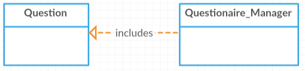
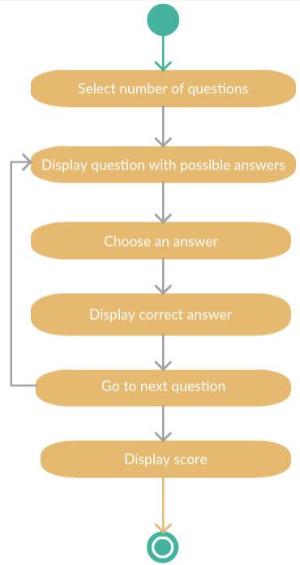
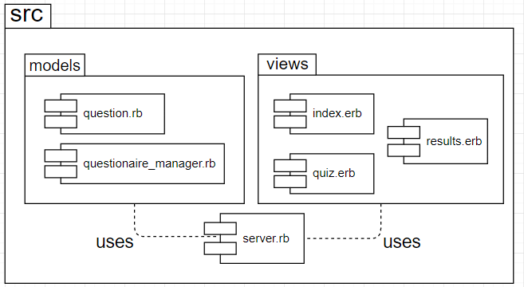
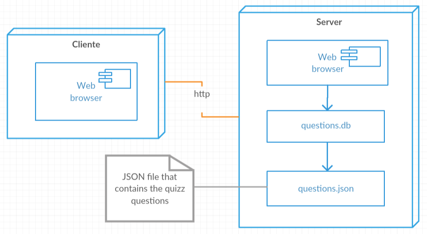
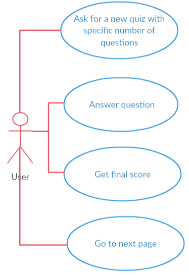

Application Design and Architecture¶ ↑
| Author |
Francisco Geada Rodríguez, María Fernanda Cruz González |
| Date |
November 23, 2017 |
Overview¶ ↑
_Quizz App_ is a Ruby web application that tests the user about her/his knowledge on design patterns.
This application was developed using the _Sinatra DSL_ using the _Model–View–Controller (MVC)_ architectural pattern. These models were implemented using the Sequel database toolkit for ORM (object-relational mapping) over SQLite3.
First, the application asks the user the amount of questions to be answered. Then, the application chooses, from a bank of over 40 questions, a multiple choice question with 3 possible answers, and shows it to the user. After the user answers the question, the application tells the user if the answer was right or wrong, and shows the correct answer, in order to proceed to see and answer the next question. Once all questions have been answered, the application displays the number of questions answered correctly.
The directory structure for the application and its documentation is as follows:
quizapp/
├─ doc/ Folder produced by RDoc.
├─ classes/ Folder produced by RDoc.
├─ css/ Folder produced by RDoc.
├─ files/ Folder produced by RDoc.
├─ img/ Folder for the documentation’s image files.
└─ src/ Folder for the application’s source code.
├─ models/ Folder for the application’s models.
├─ public/ Folder for the server’s public documents.
│ └─ stylesheets/ Folder for the application’s CSS files.
│ └─ support/ Folder for the application’s support files.
└─ views/ Folder for the application’s views (ERB files).
Installing and Running the Application¶ ↑
In order to run _Quiz App_ you need to have Ruby 2.3 or more recent and the Sinatra gem installed in your system.
To install Sinatra and Sequel, type the following commands at the terminal:
$ sudo gem install sinatra $ gem install sequel
To run the _Quiz App_ web application, run the server by typing the
following command at the terminal from the quizapp/src
directory:
$ ruby -I . -w server.rb
Afterwards, point your web browser the server’s root URL.
4+1 Architectural View Model¶ ↑
Logical View¶ ↑
The following figure represents the UML class diagram for the +Quiz App+ model and its factory class:

In this image we can see that questionnare_manager is the
class who calls the database and instanciates the question
objects
Process View¶ ↑
Here we can see the steps followedin order to use the application.

Development View¶ ↑

Physical View¶ ↑

Scenarios¶ ↑

Patterns Used¶ ↑
The patterns used for this application are:
-
Domain-Specific Language: The
server.rbfile consists of a series of Sinatra routes. Sinatra is a DSL for creating web applications in Ruby. -
Model-View-Controller: The application follows the classical web implementation of the MVC architectural pattern. The models (
.rbfiles) and views (.erbfiles) are stored in the correspondingmodelsandviewsdirectory. -
Simple Factory: The
Questionaire_Manageris used to createQuestioninstances.
References¶ ↑
-
E. Gamma, R. Helm, R. Johnson, J. M. Vlissides. Design Patterns: Elements of Reusable Object-Oriented Software. Addison-Wesley, 1994. Available through Safari Books Online.
-
A. Harris, K. Haase. Sinatra: Up and Running. O’Reilly, 2011. Safari Books Online.
-
R. Olsen. Design Patterns in Ruby. Addison-Wesley, 2007. Available through Safari Books Online.